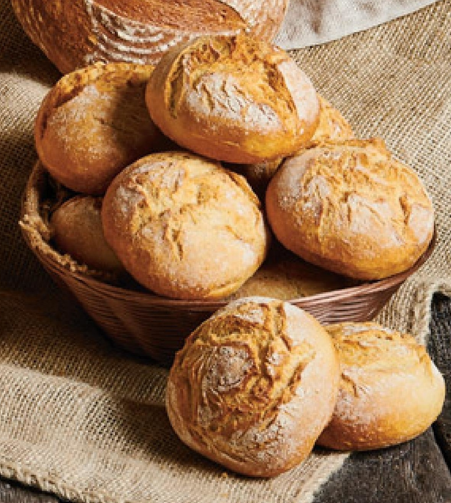

𝕻𝖑𝖆𝖞𝖇𝖔𝖎 𝕮𝖆𝖗𝖙𝖎
|  |
Playboi Carti, znany również jako Jordan Terrell Carter, to artysta, który wyłonił się na scenie muzycznej jako jeden z najbardziej innowacyjnych raperów swojego pokolenia. Jego muzyka jest połączeniem trapu, mumble rapu i eksperymentalnych brzmień, co przyniosło mu ogromną popularność wśród fanów muzyki hip-hop. Jego debiutancki mixtape "Playboi Carti" oraz album "Die Lit" zyskały uznanie za świeże podejście do gatunku. Kolejny album, "Whole Lotta Red," był jednym z najbardziej oczekiwanych i kontrowersyjnych wydawnictw. Carti słynie z charakterystycznego, powtarzalnego flow, który stał się jego znakiem rozpoznawczym.
Jego teksty często oscylują wokół tematów takich jak moda, luksus, narkotyki i styl życia celebryty. Playboi Carti wyznacza trendy nie tylko muzyczne, ale także modowe, będąc ikoną stylu dla wielu fanów. Jego współpraca z innymi artystami, takimi jak Lil Uzi Vert czy Travis Scott, przyniosła mu jeszcze większe uznanie w przemyśle muzycznym.
Playboi Carti nieustannie ewoluuje artystycznie, eksperymentując z brzmieniami i wciąż zaskakując swoją publiczność. Jego wpływ na kulturę muzyczną jest niezaprzeczalny, a jego miejsce jako jednego z najbardziej wpływowych raperów współczesności jest solidnie ugruntowane
Kliknij, żeby przeczytać jeszcze więcej o Cartim! (artykuł z Wikipedii)